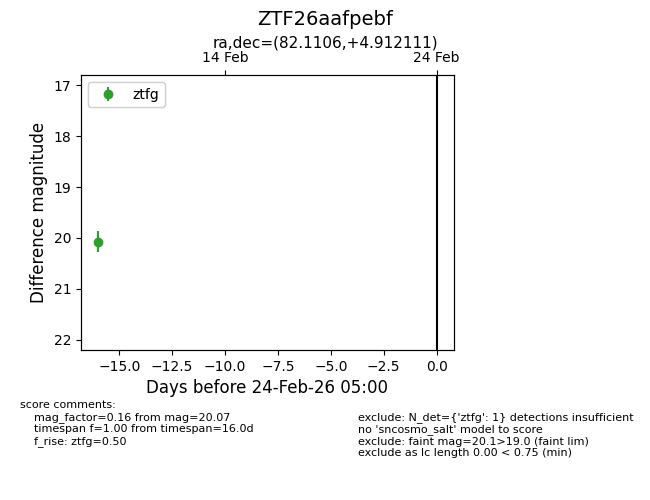
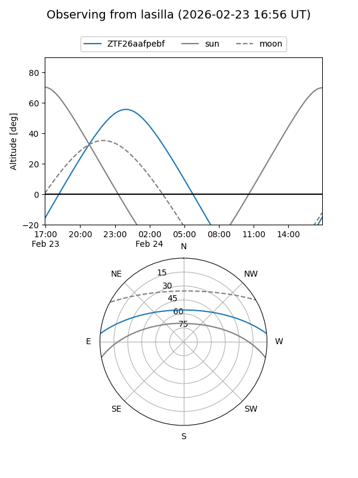
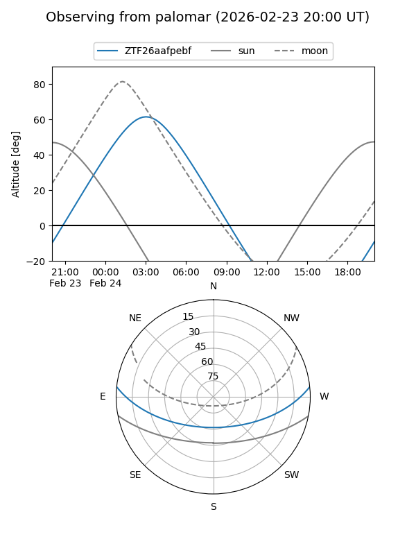

ZTF26aafpebf
Target ZTF26aafpebf at 2026-02-24 09:08
Aliases and brokers:
FINK: link
Lasair: link
ALeRCE: link
alt names
ZTF26aafpebf (ztf,fink_ztf)
Coordinates:
equatorial (ra, dec) = 82.1106,+4.91211
equatorial (HMS+DMS) = 05:28:26.55,+04:54:43.60
galactic (l, b) = (198.6511,-15.96768)
Flags:
Photometry:
last ztfg=20.07
1 ztfg detections
Lightcurve

Visibility


Additional plots